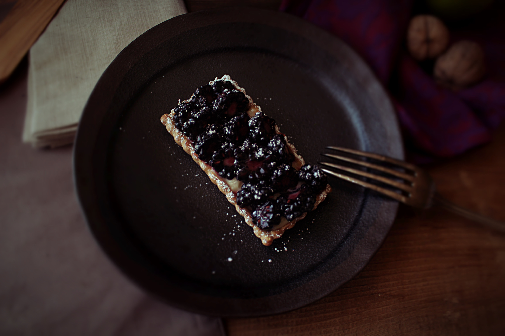

Prancing Pony's Blackberry Tart

Desription
"There was hot soup, cold meats, and a blackberry tart, new loaves,
slabs of butter, and half a ripe cheese: good plain food, as good
as the Shire can show, and homelike enough to dispel the last of
Sam’s misgivings (already much relieved by the excellence of the
beer)."
Ingredients
Crust
- 250g / 2 cups – All purpose flour
- 1 tsp – salt
- 1 tsp – granulated sugar
- 160g / 1 stick + 1 tbsp – cold, unsalted butter
- 10g – vegetable shortening
- 115g – ice cold water, or as needed
Pastry Cream
- 340g milk
- 3 large yolks
- 45g granulated sugar
- 15g all purpose flour
- 15g cornstach
- 1tsp salt
- 1 tsp vanilla extract
- 1 pint fresh blackberries
Steps
- In a mixing bowl, combine your four, salt, sugar, and
shortening. With your fingers, or in a stand mixer with a
paddle attachment, work the shortening into the flour. You’ll
want the shortening to create a clumpy sand texture with the
flour. Next, add your cold butter. Slicing the butter will
help incorporate into the flour easier but cubes of butter will
work as well. Work the butter into the flour until it creates
hazelnut size pieces. Add the ice cold water and mix just
until the flour is hydrated. Wrap with plastic wrap and place
it into the refrigerate for 20 minutes.
- Meanwhile, prepare your pastry cream by heating the milk on
medium heat until it comes to a simmer. In mixing bowl,
combine your egg yolks, vanilla extract, sugar, salt, flour,
and cornstarch. Mix until combined. Once the milk comes to a
simmer, pour a quarter of it into the yolk mixture.
Immediately stir to combine. Continue to temper the yolks with
the hot milk. Once that is done, pour the mixture back into
the pot over medium heat. Continue to whisk the mixture as it
thickens. Let it come to a boil for a minute or two to ensure
that the flour has been cooked through. Strain and cover
directly with plastic wrap. Place it into an ice bath and let
it cool down.
- While the pastry cream is cooling, preheat your oven to 350F
and place your dough on a lightly floured surface. Cut the
dough into five equal pieces. Take one piece and roll it out.
Try to keep it as rectangular as possible or with whatever
shape you are deciding to use. Transfer the dough into the
tart pan and gently press in the edges and corners. Dock with
a fork and continue the same process with the rest of the
tarts. Bake at 350F for 12-15 minutes or until golden brown.
Let the tart shells cool after baking.
- Once the pastry cream is cool, loosen it with a spatula or in a
mixing bowl with a paddle attachment. If you find the cream is
too thick, you can loosen it with heavy cream. Fill the tart
shells with the cream and garnish with sliced blackberries.
Notes: Make sure to bake your tarts until it is golden brown
because that will help ensure the crust will hold up to the pastry
cream over time. Some use an apricot glaze to layer the bottom to
help with that issue.